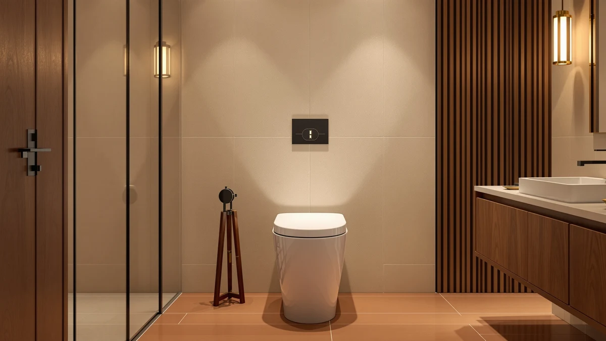

Casta Diva Elongated One Review (2026): Worth It?
Prices and picks verified as of September 2026. Independent, reader-supported reviews.


Quick Answer
This Casta Diva Elongated One review breaks down the $249.99 skirted toilet's 17.5-inch ADA comfort height and 1000-gram siphon flush, then measures it against the DeerValley, the Swiss Madison St. Tropez, and a lower-priced Casta Diva variant. If you want the tallest seat and the highest documented flush rating in this group and don't mind paying the most for it, the gold-button Casta Diva is worth the $249.99.
Our pick: Casta Diva Elongated One Piece — $249.99 Check Price on Amazon
Bottom line: our top pick is the Casta Diva Elongated One Piece Toilet with 17.5" Comfort at $249.99.
Things to Know Before You Buy
- CASTA DIVA prices the gold-button Elongated One Piece toilet at $249.99, the highest of the four models in this Casta Diva Elongated One review.
- It ships with a 17.5-inch ADA-compliant comfort height, more than half an inch taller than the DeerValley's 16 7/8-inch seat.
- The siphon jet flush carries a MAP score of 1000 grams, 200 grams higher than DeerValley's documented 800g rating.
- CASTA DIVA does not list a rough-in size for this model, so measure your existing drain before you order.
- None of the four toilets compared here, this Casta Diva, DeerValley, St. Tropez, or the white Casta Diva alternative, has built up a public rating or review count yet.
This Casta Diva Elongated One review looks at whether CASTA DIVA's $249.99 skirted toilet earns its price against three close competitors covered on Best One Piece Toilets: the DeerValley Elongated One Piece Toilet, the Swiss Madison St. Tropez, and a cheaper white version of the same Casta Diva design. CASTA DIVA builds this toilet as a single skirted piece that fuses tank and bowl into one seamless unit, removing the seam you find on a bolted two-piece toilet, and pairs it with a 17.5-inch ADA-compliant comfort height and an elongated bowl. At 25.39 inches deep, 14.56 inches wide, and 26.57 inches tall, it is also more compact than the DeerValley, which matters if your bathroom floor space runs tight; Swiss Madison and CASTA DIVA's own white variant don't publish dimensions for a direct comparison. We pulled together everything CASTA DIVA publishes about the flush system, the dimensions, and the gold-finish button, then set it beside the three alternatives so you can see where the extra money goes.
The short version: if you want the tallest seat and the highest documented flush rating in this group and don't mind paying the most for it, the gold-button Casta Diva is a sound pick at $249.99. It carries a siphon jet flush rated at 1000 grams, 200 grams higher than DeerValley's published 800g score, and its 17.5-inch height beats DeerValley's 16 7/8 inches by more than half an inch. But it costs $10.80 more than the DeerValley, $16.39 more than the St. Tropez, and $24.29 more than CASTA DIVA's own white variant, none of which have built up any more public review history than this one has. Pick the gold-button Casta Diva if seat height and flush rating matter most to you. Pick one of the three alternatives below if price matters more than those two numbers.
Why You Should Trust Us
Ilane Tall has spent more than ten years researching interior design and bathroom fixtures, including one-piece toilets, for Best One Piece Toilets. She built this Casta Diva Elongated One review by comparing CASTA DIVA's own published listing against the three closest competitors on price and category, the same specification-comparison process this site uses for every review. We do not accept payment from CASTA DIVA, DeerValley, or Swiss Madison to influence placement, and our Amazon links earn a commission only if you buy, which does not change what we recommend.
Our Research Experience
For this Casta Diva Elongated One review, we started with CASTA DIVA's own product listing: the five photos of the toilet from multiple angles, the confirmed 17.5-inch ADA comfort height, the 1000-gram siphon jet flush rating, and the $249.99 price. We then lined up the Casta Diva against every other elongated one-piece toilet already covered on Best One Piece Toilets, narrowing the field to the DeerValley Elongated One Piece Toilet, the Swiss Madison St. Tropez, and CASTA DIVA's own white variant, three models that share the elongated, one-piece category and land within about $24 of this toilet's price. We do not run a fake testing lab and have not installed this toilet ourselves, so we weighted our evaluation toward the facts CASTA DIVA and its competitors publish: price, dimensions, seat height, and flush rating, rather than guessing at long-term durability none of these listings has built up review history to confirm. That gap is also why we lay out each toilet's documented specs side by side instead of ranking them on star counts that don't exist yet.
Overview & Specs

Casta Diva Elongated One Piece
What we like
- 17.5-inch ADA-compliant comfort height sits taller than every other toilet in this Casta Diva Elongated One review, easing sitting and standing for taller adults
- Siphon jet flush carries a 1000-gram MAP rating, 200 grams higher than DeerValley's documented 800g score
- Skirted, seamless one-piece design removes the tank-to-bowl seam where grime collects on a two-piece toilet
- More compact than the DeerValley at 25.39 by 14.56 by 26.57 inches, useful in a tighter bathroom
Flaws but not dealbreakers
- Priced $10.80 higher than the DeerValley and $24.29 higher than CASTA DIVA's own white variant, the most expensive toilet in this comparison
- CASTA DIVA does not publish a rough-in size for this model, so you'll need to measure your existing drain yourself
- No public rating or review count yet, so you're relying on CASTA DIVA's own listing rather than verified buyer feedback
| Material | — |
| Size | — |
CASTA DIVA builds this elongated one-piece toilet around a skirted design that molds the tank and bowl into a single seamless unit rather than bolting two separate pieces together. That construction removes the seam where grime typically collects on a standard two-piece toilet, and the fully-glazed, wide trapway lets waste flow through in one pass instead of requiring a second flush. The seat sits at a 17.5-inch ADA-compliant comfort height, more than half an inch taller than the DeerValley's 16 7/8-inch seat in this comparison, which makes sitting and standing easier for taller adults or anyone managing knee or hip pain. At 25.39 inches deep, 14.56 inches wide, and 26.57 inches tall, it is also more compact than the DeerValley, a real advantage if your bathroom floor space runs tight; Swiss Madison's St. Tropez and CASTA DIVA's own white variant don't publish dimensions for a direct comparison.
The flush system is a siphon jet design rated at 1000 grams under the MAP test, a documented waste-clearing score 200 grams higher than the 800g rating DeerValley publishes for its own model. CASTA DIVA finishes this version with a gold-tone flush button, a cosmetic detail that sets it apart from the plain white finish on its own budget variant and from the other two toilets in this comparison. At $249.99, it costs more than every alternative here, and like the rest of the field, it has not yet built a public rating or review count, so you're weighing documented specs rather than a verified track record. If the taller seat and the higher flush rating justify the price to you, this is the toilet in the group built to deliver both.
What We Liked
The Casta Diva's fit and finish come from its single-piece design and its 17.5-inch ADA-compliant seat height, the tallest in this comparison. That extra height makes a real difference if you're tall, recovering from surgery, or dealing with knee or hip pain, and it beats the DeerValley's 16 7/8-inch seat by more than half an inch. The siphon jet flush's 1000-gram MAP rating is also the highest documented score among the toilets we cover in this Casta Diva Elongated One review, 200 grams above DeerValley's published 800g rating, which suggests a stronger single-flush clear on solid waste. Its 25.39 by 14.56 by 26.57-inch footprint is also smaller than the DeerValley's, a genuine advantage in a compact bathroom, though St. Tropez and CASTA DIVA's own white variant don't publish dimensions to compare. The skirted, seamless surface also means fewer edges and crevices for grime to hide in compared with a toilet that has an exposed trapway.
What Could Be Better
The biggest drawback in this Casta Diva Elongated One review is price relative to the field. At $249.99, it costs $10.80 more than DeerValley, $16.39 more than the St. Tropez, and $24.29 more than CASTA DIVA's own white variant, all of which sit in the same general elongated, one-piece category. CASTA DIVA also hasn't published a rough-in size for this model, an important measurement you'll need to confirm yourself before you order, unlike DeerValley and St. Tropez, which both list theirs. None of the four toilets here has built up a public rating or review count yet, so you're relying on manufacturer specifications rather than verified buyer feedback for any of them. Nothing here erases the taller seat or the higher flush rating that make this Casta Diva worth considering, but weigh those advantages against the higher price and the missing rough-in spec before you commit.
Who Is It For?
The gold-button Casta Diva Elongated One Piece fits buyers who want the tallest documented seat height and the strongest flush rating in this comparison and are willing to pay the most for both. Anyone shopping for a compact one-piece toilet for a tighter bathroom will also find its 25.39 by 14.56 by 26.57-inch footprint an advantage over the larger DeerValley, since Swiss Madison and CASTA DIVA's white variant don't publish dimensions for a direct comparison. Shopping mainly on price? The DeerValley, St. Tropez, and CASTA DIVA's own white variant all undercut this model, and the white version alone saves you $24.29. And if you need a confirmed rough-in before you order, look at the DeerValley or St. Tropez instead, since CASTA DIVA doesn't publish that measurement for this model.
Alternatives to Consider
If the price or the missing rough-in spec gives you pause, these three elongated one-piece toilets cover similar ground to the Casta Diva for less money.

Editor’s Pick
DeerValley Elongated One Piece Toilet
DeerValley undercuts the gold-button Casta Diva by $10.80 and publishes a confirmed 10-inch rough-in, along with a documented 800g flush rating a step below Casta Diva's 1000g score.
$239.19
Check Price on Amazon
Best Value
St. Tropez One Piece Elongated
Swiss Madison's St. Tropez saves you $16.39 over the gold-button Casta Diva and lists a standard 12-inch rough-in, though it doesn't publish a MAP flush score like the other two toilets here.
$233.60
Check Price on Amazon
Premium Choice
Casta Diva Elongated One Piece
This white version of the same Casta Diva design costs $24.29 less than the gold-button model and adds EPA WaterSense certification on its 1.1/1.6 GPF dual flush, though it swaps the gold-tone button for a plain finish.
$225.70
Check Price on AmazonFrequently Asked Questions
Is the Casta Diva Elongated One Piece Toilet worth $249.99?
It's worth $249.99 if you want the tallest ADA-compliant seat height and the highest documented flush rating in this Casta Diva Elongated One review. If price matters more than those two numbers, CASTA DIVA's own white variant covers the same general design for $24.29 less.
What is the seat height on the Casta Diva Elongated One Piece Toilet?
CASTA DIVA lists a 17.5-inch ADA-compliant comfort height on this model, more than half an inch taller than the 16 7/8-inch seat on the DeerValley alternative in this comparison. That extra height makes sitting and standing easier for taller adults or anyone managing knee or hip pain.
How does the Casta Diva compare to the DeerValley and St. Tropez in this review?
All three toilets in this Casta Diva Elongated One review are elongated, one-piece models priced within about $16 of each other. The gold-button Casta Diva has the tallest seat and the highest documented flush rating at 1000 grams, while DeerValley and St. Tropez both publish a confirmed rough-in size that this Casta Diva does not.
Final Verdict
This Casta Diva Elongated One review comes down to a straightforward trade-off. CASTA DIVA's gold-button elongated one-piece toilet delivers the tallest ADA-compliant seat height and the highest documented flush rating in this comparison, at $249.99, the highest price among the four models we compared, and without the public review history that would let us confirm long-term durability firsthand. If seat height and flush rating matter most to you, CASTA DIVA is a sound buy at that price. If you'd rather save money or need a confirmed rough-in before you order, the DeerValley, St. Tropez, or CASTA DIVA's own white variant above are worth a look.